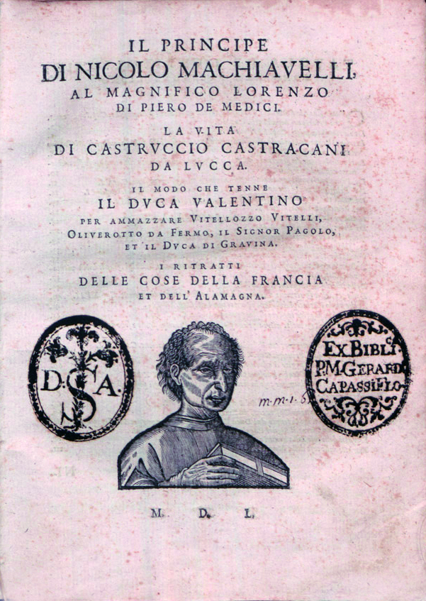

La ultima cena, Da Vinci
Link a Wikipedia

Movimiento del brazo, Da Vinci
Link a Wikipedia
David, Miguel Ángel
Link a Wikipedia
Capilla Sixtina, Miguel Ángel
Link a Wikipedia
Infierno, Dante
Link a Wikipedia
Quijote de la Mancha, Cervantes
Link a Wikipedia

El Principe, Maquiavelo
Link a Wikipedia

Imprenta, Gutenberg
Link a Wikipedia